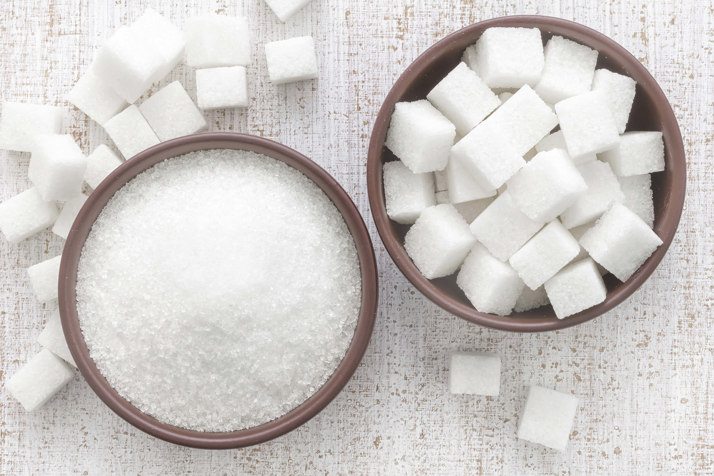

Автор : Александра Тырлова
Как известно, однозначно вредных или полезных продуктов не бывает. И сахар здесь не исключение. Есть у него и свои плюсы, и свои минусы.
Польза:
● Польские медики провели независимое исследование, в результате которого выяснили следующий неоспоримый факт: вообще лишенный сахара человеческий организм долго не протянет. Сахар активизирует кровообращение в головном и спинном мозге, и в случае полного отказа от сахара могут наступить склеротические изменения.
● Ученые обнаружили, что именно сахар существенно уменьшает опасность поражения бляшками кровеносных сосудов, а значит, предотвращает тромбозы.
● Артриты у сладкоежек бывают гораздо реже, чем у людей, отказывающих себе в удовольствии побаловаться сладеньким.
● Сахар помогает наладить работу печени и селезенки. Именно поэтому людям с заболеваниями этих органов часто рекомендуют диету с повышенным содержанием сладкого.
Вред:
● Сладкое портит фигуру. Сахар – весьма калорийный продукт, но при этом он не содержит практически никаких витаминов, клетчатки и минеральных веществ. Соответcтвенно одним сахаром сыт не будешь, и чтобы наесться, нужно съесть что-то еще. А это дополнительные калории. Кроме того, часто сахар поступает в организм в сочетании с жиром – в виде тортиков и пирожных. А это тоже не добавляет стройности.
● Рафинированный сахар, в отличие от сложных углеводов типа картошки, быстро усваивается организмом и вызывает мгновенное повышение уровня глюкозы в крови. Глюкоза – это «горючее», которое нужно для работы мускулов, органов и клеток человеческого тела. Но если вы ведете малоподвижный образ жизни и организм не успевает быстро израсходовать такое количество топлива, лишнюю глюкозу он отправляет в жировое депо. А это не только дополнительные килограммы и сантиметры, но и нагрузка на поджелудочную железу.
● Сахар вреден для зубов, он способствует образованию кариеса, хотя и не непосредственно. Главный виновник дырок в зубах – зубной налет, микроскопическая пленка из бактерий, частиц пищи и слюны. Соединяясь с зубным налетом, сахар повышает уровень кислотности во рту. Кислота разъедает зубную эмаль и начинается кариес.
Сколько вешать в граммах?Так что же делать? Выбросить на помойку купленный впрок мешок сахара или, наоборот, щедро сдабривать чай и кофе рафинадом? На самом деле нужно просто соблюдать меру.
Диетологи считают, что взрослому человеку за день можно съедать приблизительно 60 г сахара (примерно 15 кусочков рафинада или 12 ложек сахарного песка). Все, что сверх этой нормы, уже вредно. Кажется, что 15 кусков – это много, но сладкоежкам не стоит радоваться раньше времени. Ведь сахар содержится не только в сахарнице, но и в других местах. Судите сами:
● Три овсяных печенья – 20 г сахара.
● Пятидесятиграммовая плитка шоколада – 60 г сахара.
● Стакан сладкой газировки – 30 г сахара.
● Яблоко – 10 г сахара.
● Стакан апельсинового сока – 20 г сахара.
Однако не стоит думать, что организму все равно, съедите ли вы яблоко или два-три кусочка сахара. Сахара бывают двух типов – внутренние и внешние. Первые содержатся во фруктах, злаках и сладких овощах, таких как свекла и морковь. Поскольку сахар в них «упакован» в клетчатку, в нашем организме задерживается лишь ограниченное его количество. К тому же этот сахар поступает вместе с витаминами и микроэлементами. Другое дело – внешние сахара. Они содержатся в меде, сладких напитках, пирожных и конфетах. Именно эти сахара портят зубы и фигуру.
Коричневый или белый?Гурманы считают, что коричневый сахар обладает более выраженным вкусом. Они даже делят его на сорта, будучи уверенными, что одна разновидность коричневого сахара как нельзя более подходит для выпечки, другая – для чая или кофе, третья – для фруктовых салатов. На самом деле различить эти вкусовые нюансы очень сложно.
Ясно одно, чем темнее сахар, тем больше в нем органических примесей из сока растений. Говорят, что именно эти примеси снабжают сахар некоторым количеством микроэлементов и витаминов. На самом деле количество полезных веществ в коричневом сахаре настолько мало, что назвать его диетическим продуктом никак нельзя. Но стоит он не в пример дороже белого. Дело в том, что коричневый сахар делается исключительно из сахарного тростника и у нас в стране не производится.
А вот привычный нам свекольный сахар может быть или белым, или слегка желтоватым. Последний хуже очищен, а значит, в нем сохраняются витамины.
Есть ли замена?Единственные, кому не обойтись без сахарозаменителей, – люди, больные сахарным диабетом. А вот нужны ли подсластители всем остальным, диетологи сомневаются до сих пор.
Сахарозаменители – это пищевые добавки. Многие из них во много раз слаще сахара, но менее калорийны. Однако оказалось, что это вовсе не значит, что те, кто ими пользуется, немедленно станут стройными. Ученые провели интересный эксперимент на крысах. Одних крыс они кормили йогуртом, содержащим натуральный сахар, а других йогуртом с искусственными заменителями. В результате эксперимента аппетит грызунов, в рацион которых входил заменитель сахара, значительно увеличился и они стали толстеть. Правда, пока не доказано, что захарозаменители вызывают аналогичный эффект у людей.
Опасения по поводу сахарозаменителей есть не только у диетологов, но и у медиков. Некоторые врачи считают, что некоторые подсластители могут стать причиной почечной недостаточности и обладают канцерогенными свойствами. Впрочем, все эти утверждения так и остались предположениями.
ЦифрыCреднестатистический гражданин США получает с пищей около 190 г сахара в день. Это превышение допустимой нормы в три раза. Что касается среднестатистического россиянина, то он только в чистом виде (песок и рафинад ) съедает 100 г в день, что превышает норму «всего» в полтора раза.